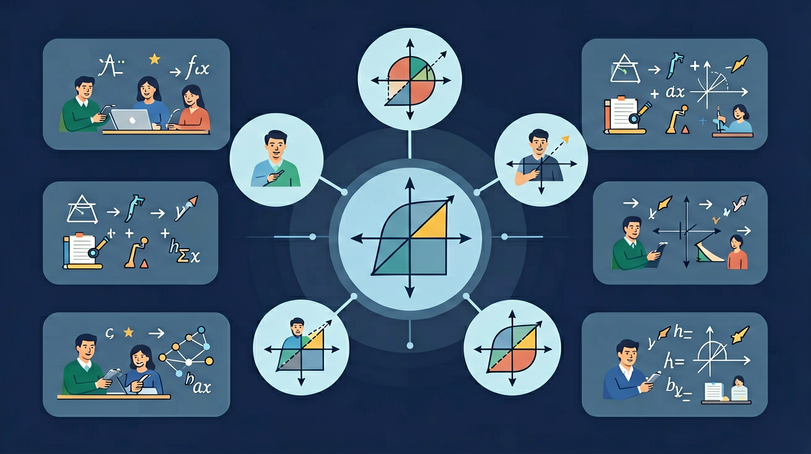

❓ 圆的标准方程和一般方程到底有什么区别？
❓ 为什么圆心坐标在标准方程里是减号，比如(x-2)²？
❓ 给定三个点怎么快速求出圆的方程？
学完这一课，这些问题你都能自信地回答。

能用自己的语言解释圆的方程的核心概念和定义
能运用圆的一般方程解决具体问题
能在新情境中灵活应用圆的方程的知识
你正在学习圆的方程，需要掌握其核心概念和方法
💡 本课的前置知识：直线方程
关于"圆的标准方程"，下列说法正确的是？
And 你已经掌握了基本的数学概念
But 仅凭已有知识，无法深入理解圆的标准方程的内涵与应用
Therefore 所以学习圆的标准方程——掌握其定义、方法和应用
圆的标准方程是圆的方程中的重要内容。
详见课本相关章节的详细定义和推导过程。
注意审题，仔细计算，检查每一步
关于"圆的标准方程"，下列说法正确的是？
And 你已经掌握了圆的标准方程
But 仅凭已有知识，无法深入理解圆的一般方程的内涵与应用
Therefore 所以学习圆的一般方程——掌握其定义、方法和应用
圆的一般方程是圆的方程中的重要内容。
详见课本相关章节的详细定义和推导过程。
注意审题，仔细计算，检查每一步
关于"圆的一般方程"，下列说法正确的是？
And 你已经掌握了圆的一般方程
But 仅凭已有知识，无法深入理解待定系数法的内涵与应用
Therefore 所以学习待定系数法——掌握其定义、方法和应用
待定系数法是圆的方程中的重要内容。
详见课本相关章节的详细定义和推导过程。
注意审题，仔细计算，检查每一步
关于"待定系数法"，下列说法正确的是？
And 你已经掌握了待定系数法
But 仅凭已有知识，无法深入理解点与圆的位置关系的内涵与应用
Therefore 所以学习点与圆的位置关系——掌握其定义、方法和应用
点与圆的位置关系是圆的方程中的重要内容。
详见课本相关章节的详细定义和推导过程。
注意审题，仔细计算，检查每一步
关于"点与圆的位置关系"，下列说法正确的是？
回顾本课核心概念，用自己的话总结圆的方程的定义和关键性质。
选择一个真实场景，运用圆的方程的知识建立模型并分析。
设计一道关于圆的方程的原创综合题，要求融合至少两个关键概念，并给出详细解答。
关于"点与圆的位置关系"，下列说法正确的是？
用圆的方程的知识解决一个实际问题，写出完整的解题过程。
圆的标准方程的常见错误：注意审题，仔细计算，检查每一步
圆的一般方程的常见错误：注意审题，仔细计算，检查每一步
待定系数法的常见错误：注意审题，仔细计算，检查每一步
点与圆的位置关系的常见错误：注意审题，仔细计算，检查每一步
通过比较圆心到直线的距离 d 与半径 r 判断位置关系：d > r 相离，d = r 相切，d < r 相交。例如，圆 (x - 1)² + (y - 1)² = 4 与直线 3x + 4y - 5 = 0 的关系：d = |3×1 + 4×1 - 5| / √(3² + 4²) = 2/5 < 2，故相交。汽车轮胎与地面的接触点就是圆与直线相切的实例。在激光测距中，通过测量反射光是否与发射光相切来判断物体表面曲率。
设两圆半径 r₁、r₂，圆心距 d：d > r₁ + r₂ 外离，d = r₁ + r₂ 外切，|r₁ - r₂| < d < r₁ + r₂ 相交，d = |r₁ - r₂| 内切，d < |r₁ - r₂| 内含。例如，圆 C₁: (x - 1)² + y² = 4 和 C₂: (x - 4)² + y² = 1 的圆心距 d = 3，因 3 = 2 + 1 故两圆外切。齿轮传动系统中，两个齿轮的啮合就是两圆外切的物理实现。城市规划时，环形交通枢纽的设计需要精确计算各车道圆的相交区域。
先独立作答，再点选项查看对错与错因。
已知圆心在(2,-1)且过点(5,3)，该圆的标准方程是
将方程x²+y²-4x+6y=3化为标准形式时，常数项应为
某圆形体育场看台对应的方程是x²+y²+2x-4y=20，其直径长度为
圆心在y轴上且经过(1,2)和(3,4)的圆，其标准方程为____
答案：x²+(y-5)²=10
设圆心(0,b)，利用两点到圆心距离相等解得b=5，再求半径
将方程4x²+4y²-16x+8y=1化为标准形式时，应先两边同时除以____
答案：4
二次项系数需化为1才能配方
某通信卫星在距地面36000km的同步轨道运行，其信号覆盖地面形成圆形区域。已知地球半径6371km，建立数学模型：
标准方程(x-a)²+(y-b)²=r²拆解为圆心(a,b)和半径r
一般方程x²+y²+Dx+Ey+F=0通过配方可转化为标准方程
标准方程直接体现几何特征，一般方程便于代数运算
想象圆规钉住圆心(a,b)，张开半径r画圆的动态过程
桥梁拱形、摩天轮等实际问题的建模应用
✅ 正确应为(x-a)²+(y-b)²，减号表示圆心坐标(a,b)
💡 混淆坐标平移方向与符号关系
✅ 必须先验证D²+E²-4F>0才表示实圆
💡 未理解二元二次方程表示圆的充要条件
口诀：左减右加圆心记，平方半径莫忘记
类比：圆方程就像家庭住址：圆心是门牌号，半径是配送范围